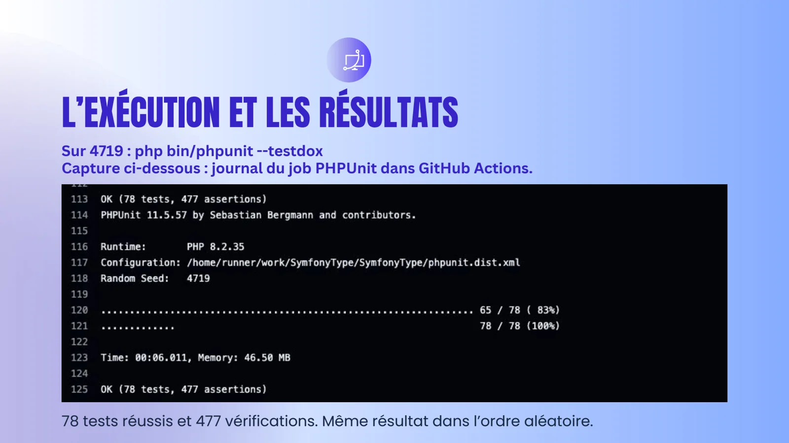
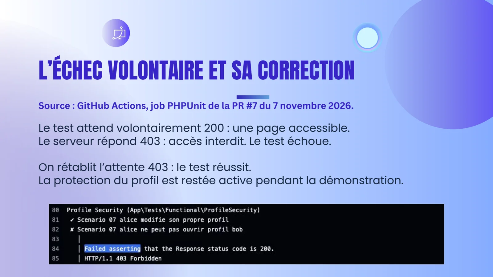
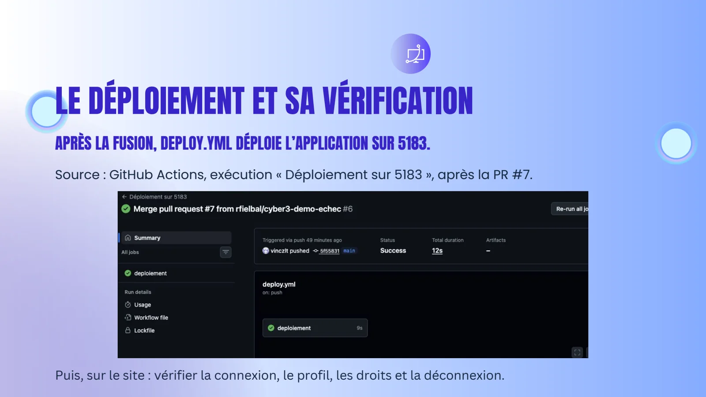

Des scénarios représentatifs
Connexion valide ou refusée, déconnexion, accès administrateur, modification de son propre profil, tentative d’élévation de rôle, inscription invalide, suspension d’un compte et renouvellement du mot de passe.
PROJET / BTS SIO SLAM
Vérifier les protections de SymfonyType avec PHPUnit et bloquer une fusion tant que les tests GitHub Actions échouent.
CYBER 03 / TESTS & INTÉGRATION CONTINUE
Dans la continuité de Cyber 2, nous avons automatisé la vérification des protections de SymfonyType. Les tests couvrent l’authentification, les profils, les habilitations et la validation des données. Une base dédiée isole les essais. GitHub Actions exécute la suite à chaque pull request, puis le déploiement intervient après validation et fusion.
BTS SIO SLAM · du 07/11/26 au 14/11/26 · Travail en binôme
DE LA MODIFICATION AU DÉPLOIEMENT
Fixtures + base de test
Créer des comptes et des données reproductibles dans dbSymfonyType_test. Le garde-fou vérifie l’environnement avant le nettoyage.
Requêtes + assertions
Simuler les parcours avec le client de test Symfony. Contrôler la réponse HTTP et l’état des données après l’action.
Pull request + PHPUnit
GitHub Actions prépare PHP, MariaDB et le schéma, puis lance la suite. La fusion demande un contrôle réussi et une approbation.
Fusion + déploiement
Après fusion dans main, deploy.yml met à jour le serveur commun. Le diaporama conserve la trace de cette exécution.
CONCEPTION DES TESTS
Un utilisateur connecté tente d’ouvrir le profil d’un autre compte. Le test attend une réponse 403, puis vérifie que les données restent inchangées. Ce double contrôle évite de considérer un simple message d’erreur comme une preuve suffisante.
loginUser() prépare une session pour tester un accès protégé. La vérification du mot de passe est couverte par des scénarios de connexion distincts.
Connexion valide ou refusée, déconnexion, accès administrateur, modification de son propre profil, tentative d’élévation de rôle, inscription invalide, suspension d’un compte et renouvellement du mot de passe.
Le développement et les tests utilisent l’instance 4719 et une base dédiée. Le job GitHub Actions dispose de sa propre base MariaDB temporaire. L’instance 5183 reçoit le déploiement après fusion.
RÉSULTATS DOCUMENTÉS

La capture du job PHPUnit montre une exécution réussie, également dans un ordre aléatoire. Ce total regroupe les cas exécutés, pas 78 fonctionnalités distinctes.

Dans la PR nº 7 du 7 novembre 2026, le test attend volontairement 200 alors que le serveur refuse l’accès avec 403. Après correction de l’attente, le contrôle repasse au vert.

La capture du workflow montre le déploiement réussi après la fusion de cette pull request. La protection du profil est restée active pendant la démonstration.
Période documentée sur GitHub : tests et intégration continue le 07/11/26, puis annotations des scénarios pour la présentation le 14/11/26.
CODE & SUPPORTS
REPÈRES E5 / Formation · projet en binôme
du 07/11/26 au 14/11/26
Vérifier les habilitations et isoler les données de test des données applicatives.
Organiser l’intégration avec des pull requests, une relecture et un contrôle automatique avant fusion.
Réaliser des tests fonctionnels et d’intégration puis conditionner la livraison à leur réussite.
Diaporama, résultat PHPUnit (78 tests, 477 assertions), échec corrigé de la PR nº 7 et capture du déploiement.
Voir la ressource ↗